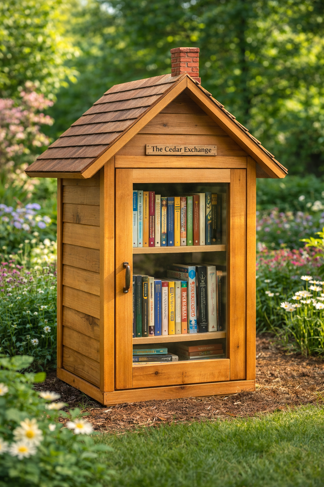

Trois Sœurs is Jane, Ruby, and Lucy. Three sisters who build things with their parents out of a little shop in Kansas City. Little libraries, mostly. The kind that live outside, get rained on, and slowly become part of wherever they land.
This one is for Louanne Hein, who teaches Ruby art on Saturdays. She's a former school teacher who somehow still chooses to spend her weekends with kids and paint. What she actually teaches isn't technique. It's permission. That a feeling is a perfectly good place to start. That you don't have to know what you're making before you begin.
Ruby learned that. It shows.
We wanted to give Louanne something that felt a little like what she gives. A small thing in a quiet spot, where someone might stop and find exactly what they didn't know they were looking for.